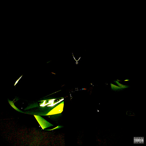
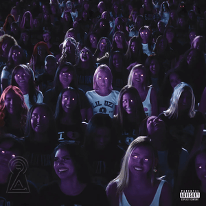

ახალი მუსიკალური ტალღა - ახალი ალბომები და სიმღერები რომლებიც არ უნდა გამოტოვოთ!
Chromakopia – Tyler, the Creator

ეს საოცარი რეპ-ალბუმი ძალიან ცოტა ხნის წინ, 28 ოქტომბერს გამოიშვა და უკვე პოპულარული გახდა. 14 ახალი სიმღერა გამოუშვა ტაილერმა და აქედან ყველას Spotify-ზე 20 მილიონზე მეტი მოსმენა აქვს. მათ შორის ყველაზე მეტი მოსმენა აქვს Sticky, Rah Tah Tah, Darling I, Noid და St. Chroma-ს. ამ სიმღერების მოსმენას აუცილებლად გირჩევთ.
Delusional – Ken Carson
კენ კარსონი ჰელოუინისთვის გვპირდებოდა ახალ ალბუმს - More Chaos, თუმცა მხოლოდ 1 სიმღერა გამოუშვა, სახელად delusional, რომელსაც უკვე 2 მილიონი მოსმენა აქვს. ხოლო ალბუმი More Chaos დიდი ალბათობით 2025 წელს გამოვა.
Eternal Atake 2 – Lil Uzi Vert
ეს ალბუმიც ახლახანს, 1 ნოემბერს გამოვიდა. მოიცავს 16 სიმღერას, რომლებმაც უკვე მხოლოდ 2 დღეში 2 მილიონზე მეტი მოსმენა დააგროვეს. გირჩევთ ამ ახალ ალბუმსაც მოუსმინოთ და შეაფასოთ.
Brat – Charli XCX
7 ივნისს გამოიშვა ეს ალბუმი, რომელმაც ასევე დიდი ყურადღება მოიპოვა ხალხისგან. სიმღერა 360 და Apple-ს 200 მილიონზე მეტი მოსმენა აქვს და დანარჩენ სიმღერებს დაახლოებით 50-100 მილიონი.